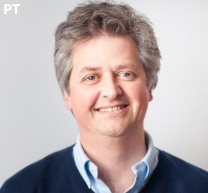
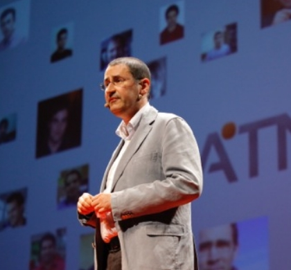
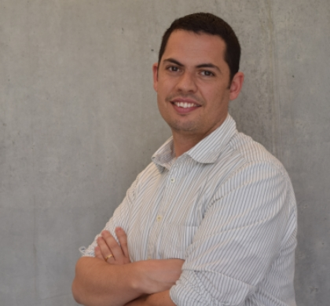

Speakers
X
 Skills:Social
Skills:Social
Session language: Portuguese
Rui Alves
CEO of RUPEAL / Owner of KWAN
Session language: Portuguese
Rui Alves is the founder and CEO of RUPEAL group, owner of KWAN, InvoiceXpress and ClanHR. For the past 10 years, Rui has the responsibility to effectively create a culture of happiness, excellence and growth on the companies he runs.
Sessions
PT - Vivemos em tempos vibrantes. Cada vez é mais barato lançar um negócio online, o ecossistema em Portugal de startups arrancou e Lisboa esta no mapa global do empreendedorismo digital. Mas o que faz a diferença entre as empresas que são bem sucedidas das que não são? Nesta sessão vamos colocar o dedo em alguns mitos e questionar muitas das mensagens que estão a ser promovidas neste novo mundo das startups tecnológicas.
Sou um ex-aluno do ISEL, fiz parte do CCISEL onde fui encarregado de trabalhos na área de microprocessadores e estive à frente da comissão pedagógica do DEETC. Na altura também organizámos um ISELTech e em 2006 fiz a mesma pergunta que muitos de vocês fizeram ou irão fazer: Vou para o estrangeiro ou abro a minha própria empresa?
Se pretendes saber o que te espera no mercado de trabalho ou o que é preciso para criares o teu próprio negócio esta sessão é para ti.
X
 Skills:VR AI
Machine Learning
Skills:VR AI
Machine Learning
Session language: English
Panayotis Tzinis
Google Developer Expert | Intelligence tech led X-Lab
Session language: English
X Lab Intelligence technology lead at Moontsho Lab. Moonshot Lab is a tech tank where crazy people, from scientists to artists, to developers to technologists, share their ideas in order to create moonshots! A moonshot is a radical solution, integrating breakthrough technology with native thinking. More than on projects we are exploring ambitions! Panayotis is also mentoring and boosting strategy in startups and tech companies.
Sessions
Curious about machine learning? Machine learning itself is a broad and deep field. Just like programming, or learning to play the violin, it can take years to master. I will show how to get started with no prior experience. At this event, I’ll introduce “ready to use” APIs from Google Cloud Platform, and TensorFlow, an open source library for machine intelligence. And I will share a few reference point for you to get started.
X
Skills:NativeScript Angular JavaScript
Session language: English
Sebastian Witalec
Technical Evangelist for Progress/Telerik
Session language: English
Sebastian Witalec is a Technical Evangelist for Progress/Telerik with over 9 years of experience in software engineering and architecture.Sebastian has passion for all types of technologies. However in the last few years his focus shifted towards cross platform Mobile development where he gained experience with Apache Cordova and NativeScript.
He is always happy to learn about the new stuff and to pass the knowledge as far as his voice (or the wire) can take him. Sebastian is based in London, UK actively working with various Dev communities in the area. When not acting techie he is a massive football fan/player (probably bigger at heart than skills).
Sessions
NativeScript is a free and open source JavaScript framework for building native iOS and Android apps. Add to that Angular with TypeScript and you will get a truly amazing combination. But I know what you’re thinking: another way of building apps? What makes NativeScript special? Here are a few cool things:
Curious about how it all works? Come learn! Architectures will be explained; apps will be built; and fun will be had by all.
Taking over the world is not an easy challenge. It requires good strategy and a powerful army. What better soldiers than a mass of obedient robots? You just need a way to issue them instruction via their BLE interface.
But should you choose to build a web app or a native mobile app? With Angular you can do both; just add Web Bluetooth API to build a web app and NativeScript to build a native mobile app.
Join this session to learn how it all works, to see how to get started, and to swear fealty to your new robot overlords.

Skills:Social Startup
Celso Martinho
Founder of SAPO, the largest Internet project in Portugal, now CEO of Bright Pixel, a Venture Builder Studio in Lisboa
X
Skills:Social Startup
Session language: Portuguese
Celso Martinho
Bright Pixel, Portugal
Session language: Portuguese
Celso is a challenge-driven, optimistic geek technologist, product person, and entrepreneurial soul, eventually thrown into a management career. Founder of SAPO, the largest Internet project in Portugal, now CEO of Bright Pixel, a Venture Builder Studio in Lisbon.
Sessions
Keynote
X
 Skills:Social
Skills:Social
Session language: Portuguese
Ricardo Fiel
Cloud Solution Architect - Microsoft, Portugal
Session language: Portuguese
Antigo membro do CCISEL e considerado o melhor aluno de Informatica, ao mesmo tempo que andava a gravar discos em Londres, nunca percebeu o conceito de “9 to 5”, de chefias, e da escada corporativa. Conhecido por agitar culturas de equipas que lidera, introduzir práticas àgeis e autonomia extrema é fã de transparência na comunicação e inimigo de formalismos. Hoje em dia na Microsoft, ajuda parceiros a desenvolver projectos de inovação através da cloud Azure com tecnologias Open-Source.
Sessions
É espantoso como passamos, em média, 18 anos a estudar e nunca nos ensinam as habilidades básicas e mais importantes para o resto da nossa vida: como lidar com pessoas (e chefes arrogantes), como comunicar bem e como gerir o recurso mais precioso – tempo. Nesta sessão, altamente interactiva, brutalmente honesta e sem filtros, tudo pode acontecer, incluindo dançar a Macarena. Vamos aprender técnicas incríveis que nos salvam em muitos momentos da vida profissional e pessoal. Centenas de outros estudantes já participaram e saíram muito mais bem dispostos do que entraram. Vais ficar de fora?
X
Skills:C# .NET
Session language: Portuguese
Luís Gonçalves
Software Engineer - BOLD International, Portugal
Session language: Portuguese
O Luís Gonçalves é software engineer na equipa de projectos internacionais da BOLD International, tendo anteriormente passado pelo SAPO e pela NOS. Começou o seu percurso profissional em 2010 e tem-se focado maioritariamente no desenvolvimento de projetos em .NET, com especial interesse em áreas como Wep APIs, identidade/segurança e automatização. Antes de ser pago para fazer o que gosta, queimou pestanas no ISEL, onde fez o Mestrado em Engenharia Informática e de Computadores.
Sessions
Cake (C# make) é uma ferramenta para automatização de builds na qual utilizamos a linguagem C# para descrever os passos a realizar. Nesta talk vamos explorar os princípios e funcionalidades do Cake, construindo progressivamente um script de build para um cenário típico em .NET. Pelo caminho haverá oportunidade para discutir vantagens/desvantagens e fazer as inevitáveis comparações com outras ferramentas.
Monica Rodrigues
Software Engineer @ Farfetch | Event Organizer @ Geek Girls Portugal | Participate @ Netponto
X
Skills:Web C#
Session language: Portuguese
Monica Rodrigues
Software Engineer @ Farfetch | Event Organizer @ Geek Girls PortugalSkills:Web C#
Session language: Portuguese
Mónica Rodrigues é software engineer na Farfetch. Licenciou-se em Engenharia Informática no ISEL e começou a trabalhar em 2010 na área do desenvolvimento web. Gosta de participar, entre outros, nos eventos da Microsoft, das comunidades Netponto e Geek Girls Portugal, da qual faz parte da organização e outras de forma a estar atenta às tecnologias emergentes.
Sessions
Hoje em dia os utilizadores das aplicações web estão cada vez mais exigentes, pretendendo cada vez mais aplicações fluídas, dinâmicas, ricas e com tempos de resposta rápidos. O principal objetivo desta sessão será entender o conceito das Single Page Application, analisar algumas das suas vantagens/desvantagens e em que contextos, na minha modesta opinião, fará sentido usar uma solução como esta face a uma aplicação web de múltiplas páginas. No final veremos uma pequena demo deste tipo de aplicações. Queres saber que demonstração é esta? E que framework Javascript está a ser usada? Aparece!

Skills:5G

Rui Aguiar
IEEE ComSoc Distinguished Lecturer | Head of Networks and Multimedia @ Instituto de Telecomunicações
X
Skills:5G
Session language: English / Portuguese
Rui Luís Aguiar
Head of Networks and Multimedia at Instituto de Telecomunicações | Chair Steering Board Networld2020Session language: English / Portuguese
Rui Luis A Aguiar (S’88, M’90) born in Porto, Portugal, Aguiar received his degree in telecommunication engineering in 1990 and his Ph.D. degree in electrical engineering in 2001 from the University of Aveiro. He is currently a Full Professor at the University of Aveiro, responsible for the networking area. He has taken positions as adjunct professor at the INI, Carnegie Mellon University and as a Visiting Research Scholar at Universidade Federal de Uberlândia, Brazil. He is coordinating a research line nationwide in Instituto de Telecomunicações, on the area of Networks and Multimedia, is leading the Technological Platform on Connected Communities, a regional cross-disciplinary industry-oriented activity on smart environments. He is now the Chair of the European ETP Networks!2020, aggregating 5G research in Europe.
His current research interests are centered on new communication systems, with special emphasis on 5G networks and Future Internet. He has more than 400 published papers in those areas and has served as technical and general chair of several conferences, from IEEE, ACM and IFIP. He hold positions on the TPC of many major IEEE ComSoc conferences. He is associated editor of Wiley’s ETT, Springers’ Wireless Networks and of the recently launched Elsevier’s ICT Express.
Sessions
25 May - 16h15 An overview of 5G network research
X
Skills:Android Kernel UX
Session language: Portuguese / English
Francisco Franco
Android apps & Kernel developer, PortugalSkills:Android Kernel UX
Session language: Portuguese / English
Independent Android developer since 2011 with several popular projects ranging from Kernels to various mobile phones and apps to extend platform functionality. Passionate aboutimproving the battery of all the devices he works with. A marketing enthusiast has as hobbie discover new strategies to reach new potential users of their apps.
Sessions
PT-Sem qualquer tipo de guião vou partilhar experiências do que é trabalhar num mundo tão competitivo como o do Android mantendo-me independente. Vamos também falar sobre quais são os desafios e o que podem fazer para seguir este caminho.
ENG-Without any type of script I will share experiences of what it is to work in a world as competitive as the Android, keeping me independent. Let's also talk about what are the challenges and what you can do to follow this path
 Skills:
Skills:
X
 Skills:Android Kotlin
Skills:Android Kotlin
Session language: English / Portuguese
Gonçalo Silva
Head of development of Todoist
Session language: English / Portuguese
Gonçalo does Android and Product at Doist, makers of Todoist. Obsessed with product design and strategy, he's built and contributed to multiple open source projects.
Sessions
ENG - Cloud - Cost Reduction in the Digital Transformation Era
Kotlin is production-ready. The first officially stable release is over a year old now and it's slowly being adopted by small and large teams worldwide. Why is Kotlin such an enticing language? What's it like to go all in? How does the end result look like? Join this session to know what Doist's experience has been so far and see for yourself!
X
Skills:Cloud
Session language:Portuguese
Miguel Ribeiro
Manager - Infrastructure Services @ GFI Portugal
Session language:Portuguese
Miguel is working with Gfi since 2007. He specialized in virtualization and other technologies directly connected to it, such as Microsoft and Storage. Recently, he has been working in infrastructures area and Cloud solutions as a pre-sales and project manager.
Sessions
ENG - Cloud - Cost Reduction in the Digital Transformation Era
As Plataformas Cloud, para além de outros benefícios, permitem a redução de custos diretos e indiretos. Serão apresentados casos práticos onde a implementação destas soluções garantem uma redução significativa dos custos, quantificando-os, ao mesmo tempo que permitem uma transformação tecnológica das organizações.

Skills:Cloud
Pedro Azevedo
Business Unit Director @ Findmore | Microsoft MVP in Dynamics CRM | XptCRM.com
X
Skills:Cloud Azure
Session language:English / Portuguese
Pedro Azevedo
Business Unit Director @ Findmore
Session language:English / Portuguese
Business Unit Director at Findmore and Microsoft MVP in Dynamics CRM. With over 13 years of experience in Microsoft technologies.
Sessions
I’ll demonstrate how to leverage the integration between Microsoft Office 365 and Microsoft Dynamics CRM to improve business collaboration, team productivity and make your organization more agile. This combination combines familiar Microsoft Office applications with a powerful customer relationship management solution accessed over the Internet to rapidly improve marketing effectiveness, boost sales productivity, and enrich customer service interactions. Maximize your investments in Office 365, including Office, SharePoint, Yammer, Exchange, and Skype.
X
 Skills:Cloud
Skills:Cloud
Session language:English / Portuguese
Alexandre Rodrigues
Software Developer @ Klarna , Sweden
Session language:English / Portuguese
Alexandre is a very curious software developer “created” by ISEL. His curiosity lead him to explore early topics like Cloud Computing, NoSQL databases and Web APIs. And it was mainly his curiosity, this time of how functional programming is used in practice, that led him to join Klarna where he is changing the way people shop online by building reliable distributed systems in Erlang.
Sessions
Erlang is a functional programming language created 30 years ago at Ericsson that powers the Billions of messages sent through WhatsApp everyday. On this talk, you will be introduced to the Erlang awesomeness.
X
 Skills:Cloud Azure
Skills:Cloud Azure
Session language:English / Portuguese
Rodrigo Antunes
Premier Field Engineer @ Microsoft
Session language:English / Portuguese
Rodrigo works as a Development PFE at Microsoft, and is also an ALM Ranger, focusing in ALM and DevOps. On its daily job, Rodrigo helps companies to improve their overall development process, with coaching and side-by-side activities. He also has a background as a Development Team Lead, architecture and code reviews, and also debugging / troubleshooting skills.
Sessions
Learn how to build and deploy Azure Web Apps fast, continuously and with the tools that will allow you to get to know your customers and application usage.
X
 Skills:Angular Web
Skills:Angular Web
Session language:English
Pedro Esperança
Angular Consultant and Coach
Session language:English
Ex-founder of e-commerce and entertainment startups, Front End Architect at @Beamery, trainer at ng-lisbon.com
Sessions
Complexity level: basic / intermediate
This workshop is for anyone interested in learning Angular 2 or who wants to make sure they are using the best patterns. The workshop will start with a getting started tutorial and mature into an open conversation / question session. Bring your laptop!
About Angular: Angular is not only a framework anymore, it's a platform. The platform provides a singular, unique and opinionated entry point for modern web applications and cross-platform development. New features like server-side rendering and the option to develop native apps for mobile devices make your apps faster and provide better user experience while taking your productivity as a developer to a new level.
Workshop requirements: You should be familiar with basic concepts of web application development, plus have some experience with JavaScript, HTML and CSS. Otherwise just bring your notebook, we will install all pre-requisites during the workshop.
X
 Skills:AR/VR
Skills:AR/VR
Session language:English / Portuguese
Session language:English / Portuguese
Daniela is the Technical Director of Mimicry Games, currently working on an unannounced multiplayer action game for VR. She's a computer scientist with a sweet spot for AI, who's fond of wearing multiple hats from business development to gameplay programming.
Proud VR pioneer, she works with a broad range of VR devices and tools to craft immersive games and experiences.
She is also co-organizer of Portugal Virtual Reality Meetup, an event aimed at creating a local community of VR developers and enthusiasts.

Sessions
VR has already been dubbed the next computing platform. It’s a diverse and vibrant medium that allows for an unprecedented sense of immersion. And now, it’s available to the general public. With this talk, attendees are invited to explore the current state of the VR industry, its current challenges and how to get into VR.
X
Skills:Mobile
Session language:Portuguese / English
Nuno Mauricio
>R&D Team Captain @ OutSystems
Session language:Portuguese / English
Nuno is a Team Captain in one of the top IT companies in Portugal, OutSystems. Graduated from Instituto Superior de Engenharia de Lisboa, started his career in 2008 in a Telecommunications company specializing in product development concept. Moved to OutSystems in 2014 where he found a match between his personality and a company culture.
Sessions
Nuno Mauricio & César Afonso
Remember how it was to write Assembly code? How hard it was to even get started and then troubleshoot issues? Well, those days are over. Today, enterprises are going more and more for low-code, focusing on digital transformation. To demonstrate this, we'll build an Android and iOS mobile app, from scratch, in just 10 minutes, without writing a single line of code.
X
 Skills:Mobile
Skills:Mobile
Session language:Portuguese / English
César Afonso
>Lead Software Engineer R&D @ OutSystems
Session language:Portuguese / English
A technology enthusiast, César graduated from Instituto Superior de Engenharia de Lisboa in 2008. However, passion aside, technology is just a means to an end. Professionally speaking, in 2012 he became in love with Project Management. As a result, in 2013 he graduated from the Executive Masters in Project Management at INDEG-IUL- Executive Education. The lectures at INDEG led him to go deeper on some topics. In 2015, he attended an Advanced Negotiation Program at Católica Lisbon School of Business and Economics. With over 9 years of professional experience, César works for one of the top rising companies in Portugal
Sessions
Nuno Mauricio & César Afonso
Remember how it was to write Assembly code? How hard it was to even get started and then troubleshoot issues? Well, those days are over. Today, enterprises are going more and more for low-code, focusing on digital transformation. To demonstrate this, we'll build an Android and iOS mobile app, from scratch, in just 10 minutes, without writing a single line of code.
X
Skills:IoT
Session language:Portuguese, slides in English
Pedro Couto
Senior Manager @ Accenture
Session language:Portuguese, slides in English
Pedro M. Couto é licenciado em Informática, pela Faculdade de Ciências da Universidade de Lisboa e Senior Manager da Accenture.
Tendo ingressado nesta empresa em 1998, desenvolveu a fase inicial da sua carreira na unidade de Health & Public Service, na área da tecnologia.Com uma larga experiência em implementações baseadas em stacks de Open-Source, foi o responsável por diversos projetos Web, em clientes de diversas indústrias.
Desde 2016 é um dos responsáveis pela implementação do NanoLabs Lisboa, uma unidade de divulgação da inovação desenvolvida pela Accenture. Foi ainda professor convidado da Universidade Europeia de Lisboa e membro da equipa de formadores do projeto DISLOGO da Universidade Católica Portuguesa, de ensino a distância para executivos.
Sessions
Uma abordagem sobre como as inovações de hoje irão impactar a forma como os humanos, os computadores e outras entidades se relacionarão no futuro. Estamos preparados para assistir a uma invasão de “inteligências artificiais”, processos de robotização e que sejam as máquinas as principais utilizadoras da Internet? E as empresas, estão preparadas para esta nova revolução digital?
X
Skills:AR
Session language:Portuguese
Rogerio Rocha
CTO and Development Lead @ Impossible
Session language:Portuguese
Rogério Rocha is the CTO and Development Lead at Impossible, a global product design and innovation company. Having a background carved out of a wide range of projects and companies, he started at ISEL in the GIATSI/Brisa research group investigating contactless technology, then passed through Siemens and Nokia implementing networking solutions for both the back-end and the mobile world, and worked at AnubisNetworks, diving into the world of cyber-security. Objective-driven, fast learner and always finding ways to challenge himself. Loves to squeeze out those extra ticks via good, clean and optimized code. Just don’t take away his headphones during the process.
Sessions
Does the “bleeding edge” technology really resonate with our personal values? During this session we will focus on how technology can improve people’s lives and still be sustainable. You will hear a story of creating an ethical smartphone with a transparent supply chain, and carefully sourced, conflict-free materials, and how to build a mobile operating system in a way that it becomes a continuation of the phone’s values. Afterwards we’ll jump to the topic of AR, and learn how state of the art technology advancements in visual tracking can help us connect and bridge the gap between the digital world and human perception.
 Skills:
Skills:
X
 Skills:AR
Skills:AR
Session language:Portuguese / English
Fabio Carballo
Android Developer @ Hole19 | AndroidLX Organizer
Session language:Portuguese / English
Fábio works an an Android Developer at Hole19, an app that is used by thousands of golfers worldwide.

Sessions
Stepping into the tech market brings many challenges by itself, and developing an app that is used by thousands of users brings another set of them. In this talk I aim to go through my "lessons learned" as a junior developer taking over the development of the Hole19 app, and how the expectations matched up with the real life.

Randy Gupta
Software Architect @ SCARATEC | Organizer @ Google Developer Group Düsseldorf
X
Skills:Cloud Backend
Java
Session language: English
Randy Gupta
Software Architect @ SCARATEC | Organizer @ GDG Düsseldorf
Session language: English
Randy is fascinated about computers since he was 10 years old and hacking his C64. Later he made his passion his profession and founded SCARATEC which started building websites in 1995 and later became a well know software producer in Düsseldorf. Randy is also organizer of the Google Developer Group Düsseldorf and specialized in Google Cloud Technologies. His favorite programming languages are Java and Groovy.
Sessions
App Engine, App Engine Flexible Environment, Compute Engine, Container Engine, Cloud Functions and many more are making it difficult to decide which product can be used for your needs. This talk strives to give you an overview and classification of the different environments and how to use it.

 Skills:
Skills: